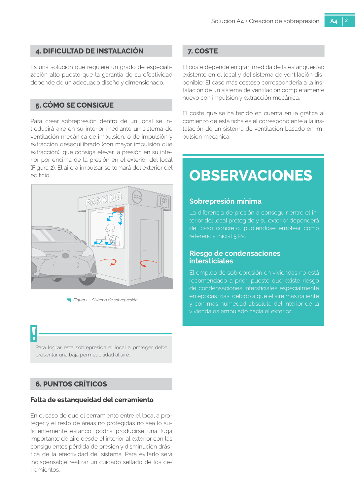

Guia de rehabilitacion frente al radon Fichas · edición sin-fecha · capa guia
Documento GUIA-PDF-f3314b0414fe · SHA-256 del PDF e58e54b822cf4ab00e258f0eb50c0f06a8c04e3730a7f530d224485e2a5bb02e
Página física 42 de 82.
Copia fiel del PDF fuente · Fuente oficial
Ficha de la disposición en la fuente oficial
Créditos y autoría en el PDF fuente. Reproducción con cita de fuente y autores.
Permiso literal: Se permite la reproducción total o parcial del contenido de este nible en el momento de su publicación. No se aceptará por las institu documento siempre y cuando se cite la fuente original
Este documento ha sido elaborado por el Instituto de ciencias
de la construcción Eduardo Torroja (IETcc) bajo la supervisión
de la Dirección General de Agenda Urbana y Arquitectura del
Ministerio de Transportes, Movilidad y Agenda Urbana (MITMA).
El IETcc, perteneciente al Consejo Superior de Investigaciones
Científicas (CSIC), es el centro de investigación en edificación
de referencia en España. La Unidad de Calidad en la Construc
ción del IETcc asesora al MITMA en la elaboración del Código
Técnico de la Edificación que, desde el año 2019, cuenta con la
sección HS6 Protección frente a la exposición al radón.
Dirección y Coordinación:
Ministerio de Transportes, Movilidad y Agenda Urbana
Isabel Marcos Anasagasti
Raquel Lara Campos
Eduardo González de Prado
Instituto de ciencias de la construcción Eduardo Torroja CSIC
Pilar Linares Alemparte
Autoras:
Pilar Linares Alemparte
Sonia García Ortega
Colaboradoras:
Virginia Sánchez Ramos
Karina Angélica García Pardo
Edita:
Centro de Publicaciones Secretaría General Técnica
Ministerio de Transportes, Movilidad y Agenda Urbana©
Entidad colaboradora:
Consejo Superior de Investigaciones Científicas · CSIC
Ministerio de Ciencia e Innovación
Catálogo de publicaciones de la Administración General
del Estado: publicacionesoficiales.boe.es
Centro virtual de publicaciones del Ministerio de Transpor
tes, Movilidad y Agenda Urbana: www.mitma.gob.es
Página web del Código Técnico de la Edificación:
SECRETARÍA GENERAL DE www.codigotecnico.org AGENDA URBANA Y VIVIENDA MINISTERIO GOBIERNO DE TRANSPORTES, MOVILIDAD DE ESPAÑA Y AGENDA URBANA DIRECCIÓN GENERAL DE
Maquetación y diseño gráfico: AGENDA URBANAY ARQUITECTURA
Lapizmente. Estrategia • Diseño Gráfico
CIENCIAFotografía portada: GOBIERNODE ESPAÑA MINISTERIODEE INNOVACIÓN
Sonia García Ortega
Los contenidos o ideas recogidas en este documento pertenecen a
sus autores. Este documento está basado en el conocimiento dispo Se permite la reproducción total o parcial del contenido de este
nible en el momento de su publicación. No se aceptará por las institu documento siempre y cuando se cite la fuente original y a sus
ciones ni los autores implicados responsabilidad de ningún tipo por el autores.
uso de estas recomendaciones. Las figuras tienen carácter ilustrativo
y no deben interpretarse como detalles constructivos.Formato: Texto de la página (Markdown)
2 Solución A4 • Creación de sobrepresión A4 2 7. COSTE El coste depende en gran medida de la estanqueidad existente en el local y del sistema de ventilación dis ponible. El caso más costoso correspondería a la ins talación de un sistema de ventilación completamente nuevo con impulsión y extracción mecánica. El coste que se ha tenido en cuenta en la gráfica al comienzo de esta ficha es el correspondiente a la ins talación de un sistema de ventilación basado en im pulsión mecánica. 4. DIFICULTAD DE INSTALACIÓN Es una solución que requiere un grado de especiali zación alto puesto que la garantía de su efectividad depende de un adecuado diseño y dimensionado. 5. CÓMO SE CONSIGUE Para crear sobrepresión dentro de un local se in troducirá aire en su interior mediante un sistema de ventilación mecánica de impulsión, o de impulsión y extracción desequilibrado (con mayor impulsión que extracción), que consiga elevar la presión en su inte rior por encima de la presión en el exterior del local (Figura 2). El aire a impulsar se tomará del exterior del edificio. Para lograr esta sobrepresión el local a proteger debe presentar una baja permeabilidad al aire. Figura 2 - Sistema de sobrepresión 6. PUNTOS CRÍTICOS Falta de estanqueidad del cerramiento En el caso de que el cerramiento entre el local a pro teger y el resto de áreas no protegidas no sea lo su ficientemente estanco, podría producirse una fuga importante de aire desde el interior al exterior con las consiguientes pérdida de presión y disminución drás tica de la efectividad del sistema. Para evitarlo será indispensable realizar un cuidado sellado de los ce rramientos. OBSERVACIONES Sobrepresión mínima La diferencia de presión a conseguir entre el in terior del local protegido y su exterior dependerá del caso concreto, pudiéndose emplear como referencia inicial 5 Pa. Riesgo de condensaciones intersticiales El empleo de sobrepresión en viviendas no está recomendado a priori puesto que existe riesgo de condensaciones intersticiales especialmente en épocas frías, debido a que el aire más caliente y con más humedad absoluta del interior de la vivienda es empujado hacia el exterior.
